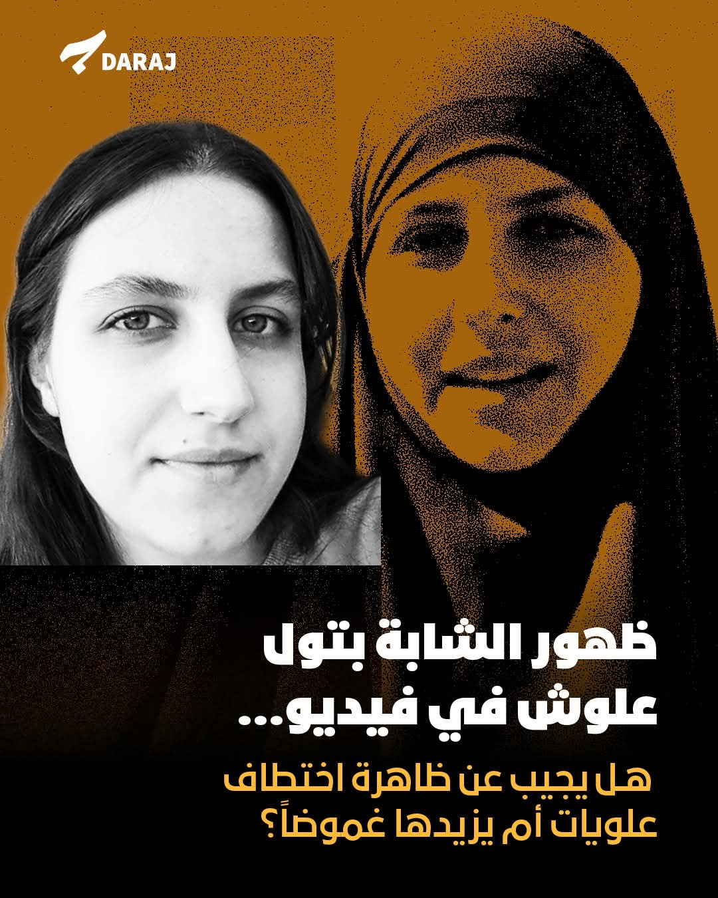

تاريخ التوثيق: 29 مايو 2026
وقع الهجوم مساء يوم الجمعة (29 مايو 2026) باستخدام طلقات نارية مباشرة من قبل مسلحين اثنين غير ملثمين تأتي هذه الحادثة في ظل مخاوف من تزايد حوادث الانفلات الأمني والسلاح المتفلت في المنطقة. للمزيد حول السياق الأمني في المنطقة
اقرأ التقرير الكامل ←